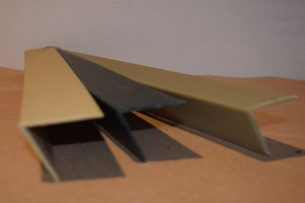

Esquineros para Patelizar
Se utilizan para paletizar diferentes productos, con la finalidad de darle mayor estabilidad a la carga , permitiendo un adecuado manejo. Contamos con esquineros plásticos y de cartón en diferentes medidas.
DE CARTON Y PLASTICO
